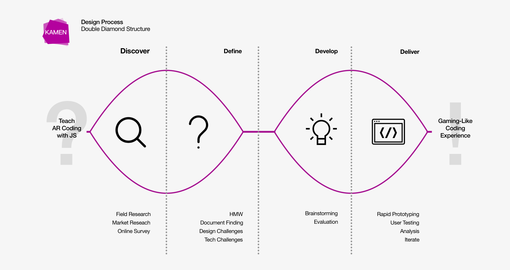
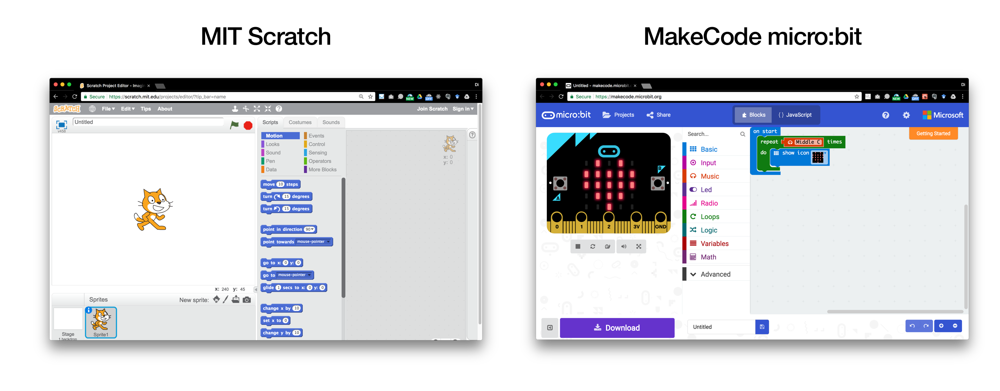
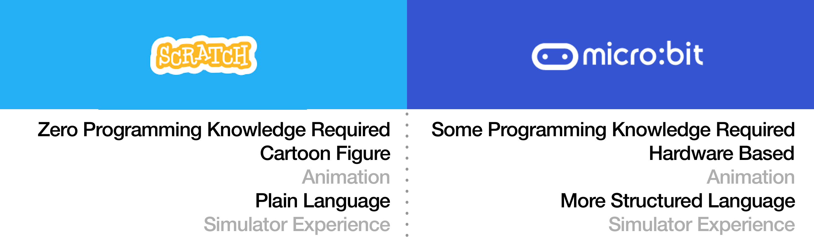
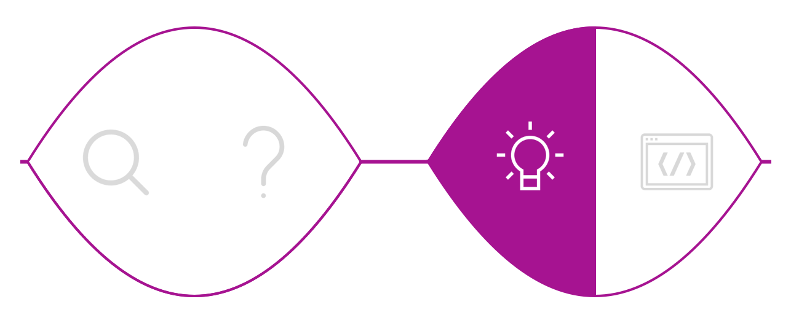
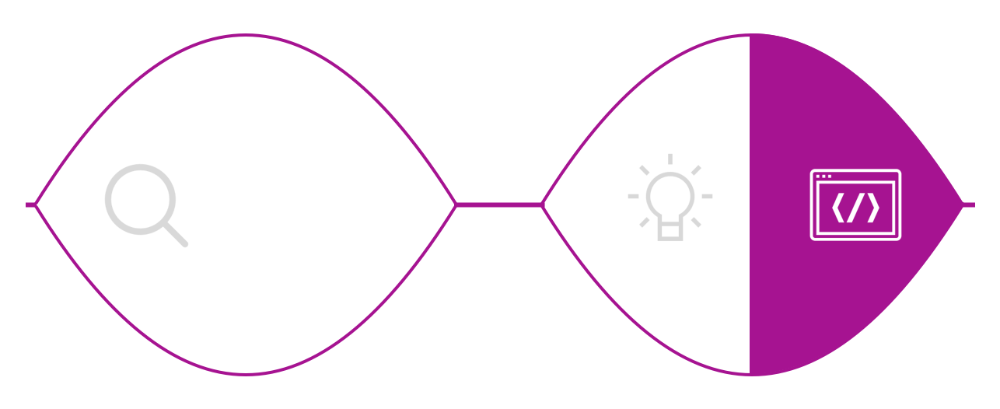
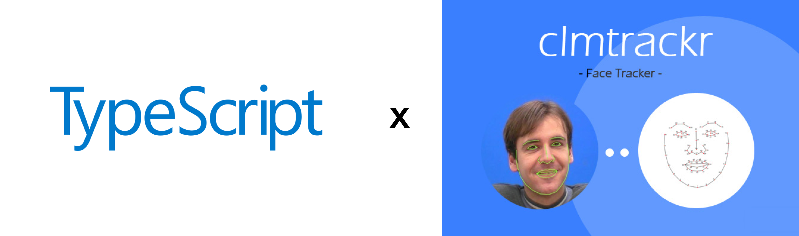
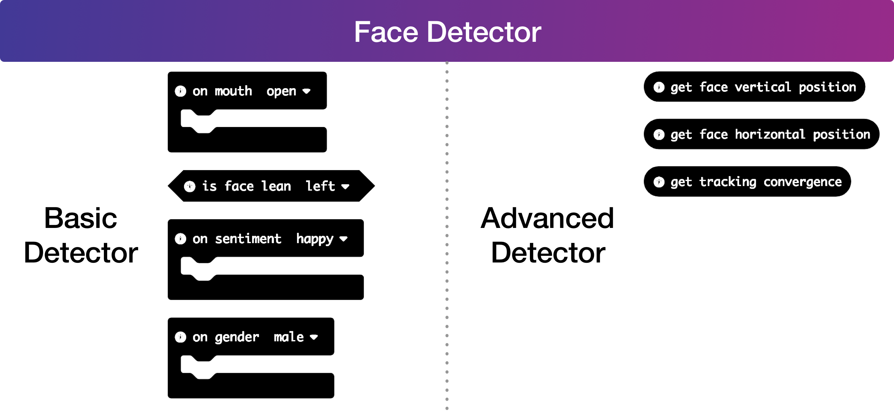
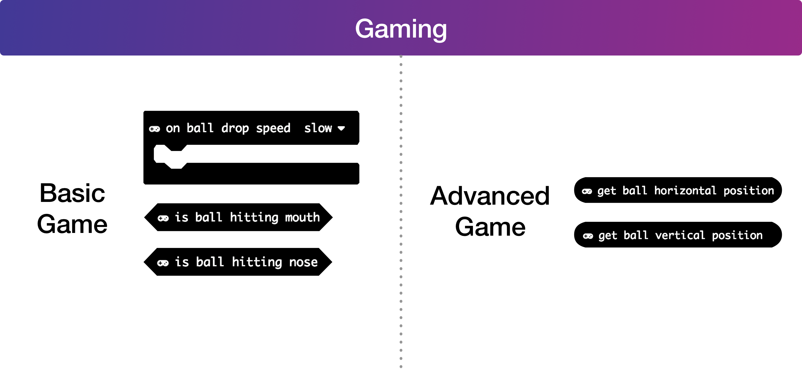

MakeCode AR
Programmable Augmented Reality
My Role
Software Engineer
UX Engineer
Code Repository
Practices
Rapid Prototyping
Software Engineering
UX Design
Live Version
Affiliation
Cornell CIS MPS
Microsoft Research
Project Time
Aug - Dec 2017

1. Problem Definition
Background
In cooperation with Cornell CIS MPS Program, Microsoft Research (Redmond) proposed this project of building customized coding environment with
Microsoft MakeCode. The ultimate project goal is to build a programming platform that allows people with very few programming experience building JavaScript applications.
During this semester-long project, we worked in a group of three, together with two engineers from Microsoft Research to build this application.
The project is presented during Cornell MPS 2017 Fall Project Showcase & Cornell 2018 Engineering Project Showcase.
The project is being published in Microsoft MakeCode Labs. It can be accessed
here.

GOAL - Effortless AR Programming Environment
Augmented reality applications have become pervasive across desktop and mobile platforms. Popular AR apps such as SNOW, Snapchat, and the newly released Apple Animoji are very popular amongst people. However, building such an AR app can be very difficult.

How can we empower people with few or even none programming background to write their own AR programs? Microsoft MakeCode provides us a solution.
Microsoft MakeCode is a platform providing a JavaScript programming environment that enables people with few programming experiences to build complicated applications. Instead of letting user writing every detail of the code, the user would develop their application through a pseudo-code playground that is non-programmer friendly.
What is "Efforless Programming"
One advantage of MakeCode is that it allows the user to build applications by constructing visual blocks of functions. In such a way. The user does not need to know details of JavaScript semantics in order to complete a program. Aside from that. Visual blocks also give a better view of the flow of the program. Thus, it is easy to interpret the purpose of the code even for non-programmers.
Once user is more comfortable reading/writing JavaScript code, he/she could then switch from blocky view to editor view and build with actual JavaScript code.
However, even in the editor view, the user would only write pseudo code to build their applications. The "dirty work" of how each API actually works is hidden from the user's perspective. As such, we enable user to experience the actual programming flow yet keep the playground simple and clean.

2. Project Analysis
Who we build for

What we want to achieve
When kids are playing with Lego blocks, they are not just simply stacking bricks. The whole process enables them to learn and understand the concept of object selection, color matching, pattern sorting etc. Empowered with MakeCode, this open source platform should teach the user a sense of AR programming with JavaScript.
More importantly, as the core feature of this application, it should provide user with a diverse set of face tracking based augmented reality functions so that user could customize their own AR apps in a creative way.
3. Design Process
The project is developed through a double diamond structure. We always started off with research or brainstorming to gather a rich set of ideas, then narrowing down into a few major pain points.

DISCOVER

We first started looking at existing applications in the market and examine how they tackle similar problems.

MIT Scratch is designed for Kids to learn how to program by constructing blocks of different functions. Each of the blocks is able to add one animation effect to the cat in the simulator. For instance “move 10 steps” would trigger the cat moving 10 frames towards a preset direction.
MakeCode micro:bit is a native MakeCode project. It has a hardware simulator environment for the user to test their constructed code. Creating a project within micro:bit requires users to have a basic mental model of hardware I/O.
Both projects are the best representation of their field. Scratch is a great educational platform for people who have zero programming knowledge. micro:bit, however requires users to have a bit knowledge of programming, but not to the point of knowing every detail of how hardware works. Both provide user great flexibility in terms of function construction. We thus compared these two platforms in terms of language design, teaching approach etc.

There is no right or wrong approach in terms of building the programming environment, only the one that best suits the user need. As of current, we think that both platforms pointed out some possible directions of how we could construct our own programming environment for our users. The question left for us is, how to describe our user need?
DEFINE
To explore the pain point of our user, the question we have to answer is:
We invited our user to use some existing MakeCode projects and asked their feedbacks of the usage.
From the survey, we got a rough picture of the actual user problem. From there on, the problem then is narrowed down to three opportunity areas worth exploring. For the opportunity areas, we strived to find each of them a solution.

DEVELOP

With the opportunity area being defined, we then started off our ideation.
DELIVER

User Journey Map
To map out the flow of interaction, we build our user journey map.
With the help of journey map, we could better define possible actions the user could perform in using the application. It also helps us understand the user's mental model and their goals in the usage.
Tech Stack
The whole project is coded with
TypeScript for better program architecture.
The face tracking library we use is
clmtracker: a web browser side JavaScript library for face detecting & tracking.

Prototype 1.0
In the first prototype, we delivered four basic function blocks.
-
Face Masks
-
Face Substitution
-
Face Outline
-
Face Deformation
Simple as they are defined, each of the function is performing one atomic action to user's face in the webcam.
By calling the function inside a "forever loop", or an infinite "while loop", the simulator would use the webcam video to lively render user's face with the selected effect.
Evaluation 1.0
In the first prototype, the simplicity of function blocks is what we aiming to achieve. Thus, every augmented reality function blocks delivered does only one atomic action and does exactly as its description says. The language we is are also plain as they could be. All the phrases we use simply describes the result of the function would achieve without any implementation details exposed to the user.
This indeed satisfies the need for non-programmer to use the application. User's ability to customize their own augmented reality logic flow is sacrificed.
In order to make the function blocks more playable, we need to introduce some complexities to advanced users.
Prototype 2.0
To introduce more customization into the programming environment, we created a new module -- Face Detector.

All the augmented reality function blocks are kept as they are and can be used as normal. The newly introduced module is separated from them.
For beginner users, they can explore the full function of augmented reality in an effortless way. However, for advanced users, they could manipulate function blocks in Face Detector to create more customized programs.
Even within the Face Detector module, functions are separated into basic and advanced categories. By default, advanced features are hidden in the dropdown and would not expose to the user, thus reducing the load of information.

Evaluation 2.0
With augmented reality module and face detector module, we are able to satisfy the need of user at different skill set levels. The project is able to deliver a complete programming experience at the moment. However, can we do more about this?
The fun part about MIT Scratch is that the whole programming experience more of a gaming experience. As we see users are able to manipulate the character in the simulator from Scratch, we are thinking of whether we could also introducing similar gaming experience into the programming environment.
Prototype 3.0
In the third prototype, we add a gaming module. Inside which has a ball dropping game function block that user could add to their programming logic.
The gaming module also categorize its functions into basic and advanced levels to cater user with different skill sets.

Evaluation 3.0
We conducted a series of contextual interviews to see how user feels about the overall programming experience.
As they are using the application to build their own logics, we recorded the function blocks they used.
As of the final function block layout, we have the complete structure shown below.
4. Final Product
The Name "KAMEN"
The name "KAMEN" comes from the Japanese word 仮面 (reads kamen), which stands for facial masks. The word is usually used with super heroes who always wear masks when bringing people justice. We hope our users could build their own KAMEN hero within our application.
UI Layout
UI layout inherits from the standard MakeCode template. Where there are three major components: Simulator, Function Block Library and Code Block Playground.
Features
Aside from the JavaScript function modules, there are three Augmented Reality function sets that are available for the user to play with.
The Basic AR module contains all the special effects that allow the user to modify their face in webcam video.
The Gaming module adds more interaction into the webcam video and enables the user to play with the dropping ball.
The Face Detector module extracts multiple facial features, allowing the user to build up their own AR logic.
Colors
For each of the function module, it has a unique identification color. For the extra three AR function module, we assigned each of them a color that best suits their position within the function panel.